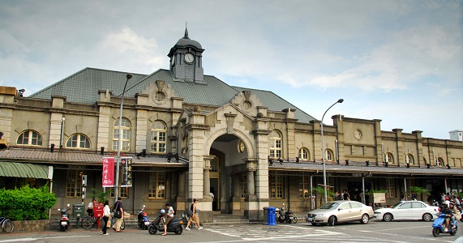

08:30 新竹集合
(1) 早餐自理
(2) 集合地點: 新竹車站??? 阿婆吃早餐???
(3) 出車：阿志車 and 毛哥車
(4) 點名：志x2.5 男 毛 蓋 消 飛 奇 共8.5人
(5) 出發前先繳公費2000 給阿男
多退少補(門票、午晚餐、油錢)
住宿費另外給蓋共，到民宿再算。

新竹 to 霧峰林家

車程：約 2 小時
13:30 霧峰到民宿
車程：30 ~ 50 分鐘
路線：
-> 霧峰交流道 上 國道3號
-> 國道3號 轉 國道6號
-> 國道6號 29-愛蘭 出口
-> 中潭公路
-> 種瓜路
14:00 桃米村-景上景民宿
地址：545南投縣埔里鎮種瓜路45-3號
電話：0910-313011
房型：
(1)雙人房：阿志 * 2.5 人
(2)六人房：其他人
14:30 前往日月潭
車程：約30分鐘 (水社)
18:30 晚餐：新山味餐廳
地址：555南投縣魚池鄉中山路134號(水社)
電話：049-285-5596